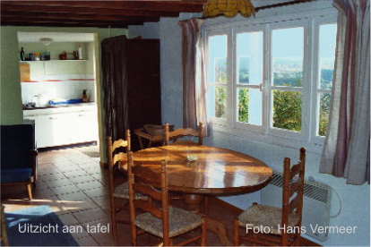
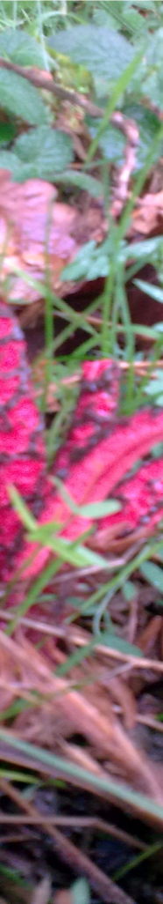
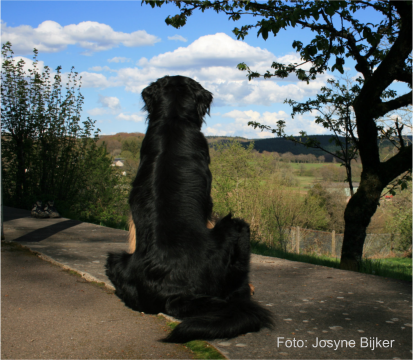
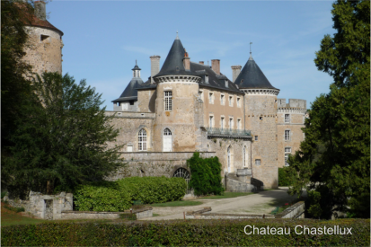

Honden welkom!
In Regional Natuurpark 'Le Morvan', op 700 km van Utrecht, staat dit sfeervolle stenen huisje met WiFi-verbinding en laadpaal op een flinke lap grond. Het ligt op ruime afstand van de hoofdwoning in een eigen omheinde boomgaard, op het hoogste punt van de streek (600 m). Bekijk het filmpje: Youtube Hondmorvan
Op het zuiden en westen kun je heerlijk op het terras zitten of onder de bomen in het gras. Het huisje is in de rug beschut door een strookje bos. Vóór heb je een mooi uitzicht over de vallei, waar tussen de meertjes zomer en winter de charolais-koeien grazen.
Het dorpje Dun-les-Places (ca. 350 inwoners) ligt op tien minuten lopen. Hier vind je een kruidenierswinkeltje en een bakkerij met vers brood en patisserie, verder is er een restaurant met een authentiek Bourgondische keuken. In de omliggende plaatsen vind je nog veel meer goede eetgelegenheden.
De Morvan is een gebied voor rustzoekers en natuurliefhebbers. Het is er stil en zeer vogel-, vlinder- en plantenrijk. Ook de kans dat je een ree, das, wild zwijn of vos ziet tijdens je wandelingen is groot. 's Nachts geniet je van de sterrenhemel en zie je duidelijk de Melkweg. Het klimaat is te vergelijken met dat van Nederland, met wat meer uitersten.
Omdat er geen industrie is, heeft de Morvan een heel zuivere lucht. Je kunt er heerlijke wandelingen maken door de bossen en de velden. De (gehoorzame) hond mag er los lopen, ook op het eigen terrein. Er zijn veel wandel- en mountainbikeroutes uitgezet. De talloze stuwmeren (Lac des Settons, Lac de Chaumeçon, Lac de Pannecière) nodigen uit tot een duik en ook kajakken en forelvissen in de rivier de Cure behoren tot de mogelijkheden. Daarnaast kun je in de omgeving tal van uitstapjes maken naar eeuwenoude kastelen. De beeldschone basiliek van Vézelay staat op de lijst met werelderfgoed; de kathedraal van Autun en de vestingwallen in Avallon van Vauban, de bouwmeester van Lodewijk XIV, zijn een begrip. Als je wilt, is er genoeg te zien en te doen, maar er is nergens massatoerisme, alles is kleinschalig. Op rijafstand vind je de befaamde Bourgondische wijngebieden Chablis, Côtes de Nuits, Côte de Beaune, Chalon, Mâcon. En ook de kleinere streken waarvan de wijn in Nederland bijna niet te krijgen is, onder meer uit Tonnerre, Vézelay en Auxerre.
Het goed onderhouden huisje heeft twee verdiepingen van elk 32 m2. In de gezellige woonkamer staat een eenvoudig te bedienen houtkacheltje. Voor snel bijverwarmen zijn er elektrische wandkachels. In halfopen verbinding met de kamer vind je een keukentje met al het kookgerei dat je nodig hebt. Verder een nette badkamer met douche en warm water uit de elektrische boiler.
Een open trapje leidt naar de slaapverdieping onder het schuine dak. De twee slaapkamers zijn onderling met een deur verbonden. In elke kamer staan twee goede éénpersoonsbedden (waarvan één lits jumeaux). Kussens, dekbedden en dekens zijn aanwezig. Overtrekken, slopen, handdoeken e.d. kun je zelf meenemen of door ons laten verzorgen.
In het huisje is volop documentatie aanwezig over de streek, ook liggen er veel wandelroutes.
Huisdieren zijn welkom op de benedenverdieping. In de directe omgeving is een Nederlandstalige dierenarts aanwezig.
Boodschappen kun je nog doen als je op zaterdag aankomt, want de kruidenier is open tot 19 uur, evenals de supermarkten in de omligende plaatsjes. Op zondagochtend kun je bij de bakker terecht voor verse croissants en een stokbroodje, bovendien is er dan een markt(je) in het buurdorp Quarré-les-Tombes met zijn gezellige terrasjes.
Veel mensen, met en zonder hond(en), hebben intussen al genoten van dit heerlijke huisje en de schitterende omgeving. Zie het gastenboek.
De weken lopen van zaterdag tot zaterdag, zie tarieven en voorwaarden.
Van harte welkom in de mooie Morvan!



Genieten van het uitzicht...

Herfst in de Morvan